第一辑 · VOL. I
Music is the language of the spirit.
HOROWITZ
音乐是灵魂的语言
POP
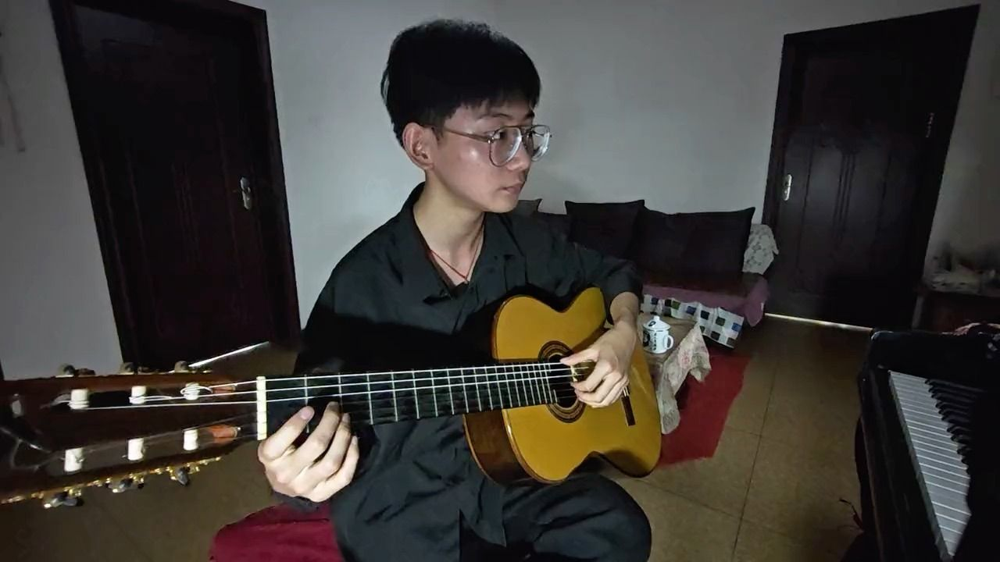
宋冬野
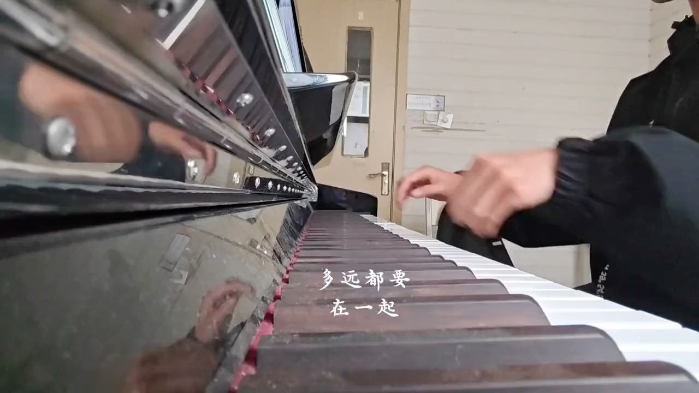
邓紫棋
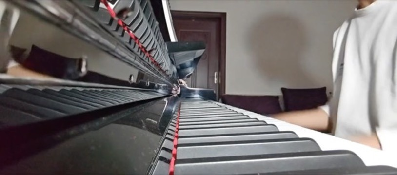
钢琴翻弹
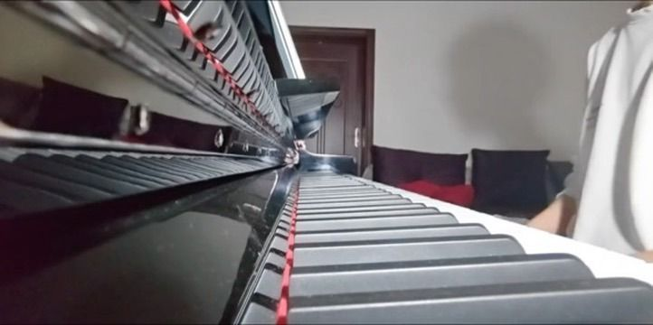
周杰伦
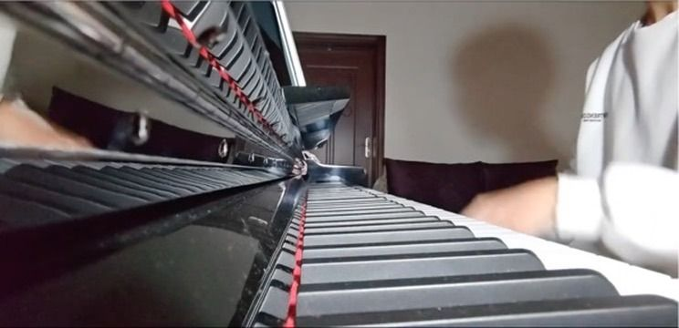
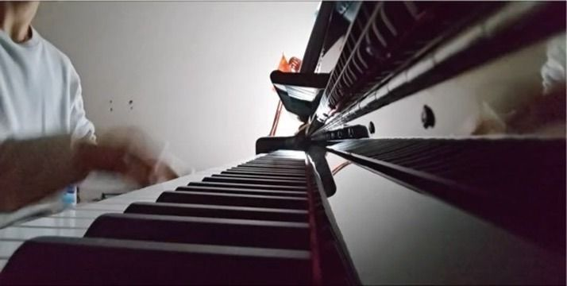
Simplicity is the highest goal, achievable when you have overcome all difficulties.
CHOPIN
简朴是最高的目标
CLASSICAL
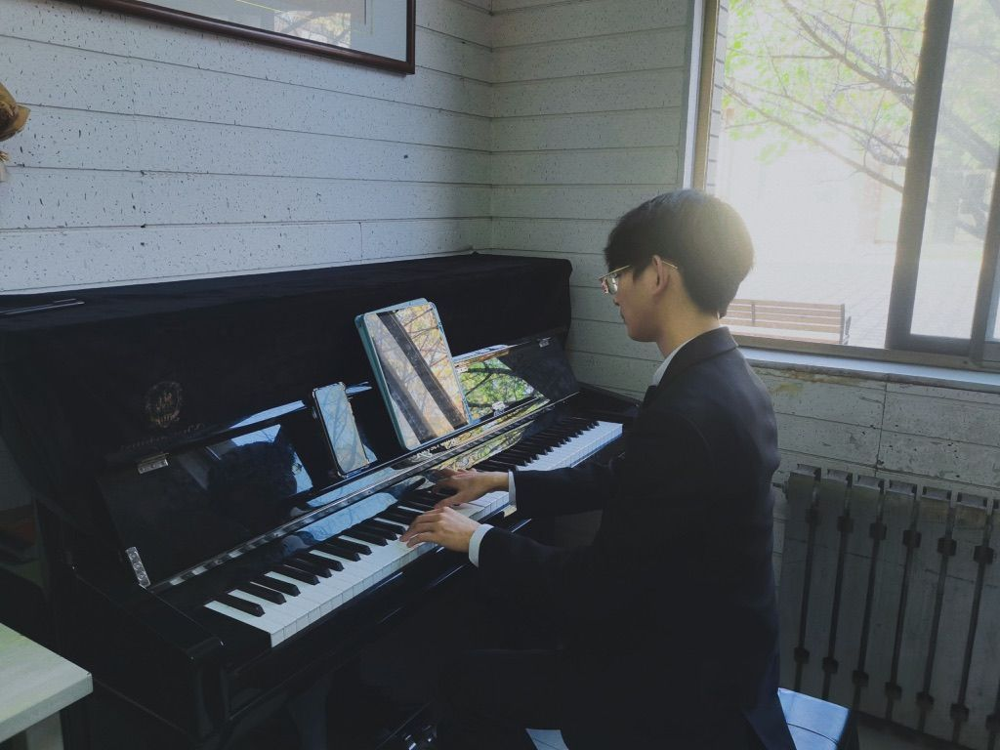
FRÉDÉRIC CHOPIN
快速音如蜂翅掠过琴键，练习曲的表皮下，是一首低语的夜曲。
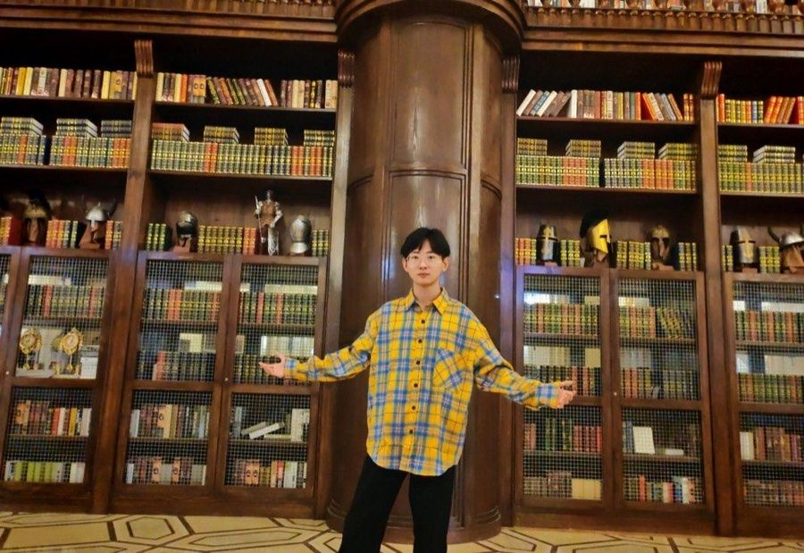
FRANZ LISZT · S. 139
十二首超技敬献车尔尼，此篇最炽烈。F小调上风与火相遇，收束处余温不散。
ORIGINAL
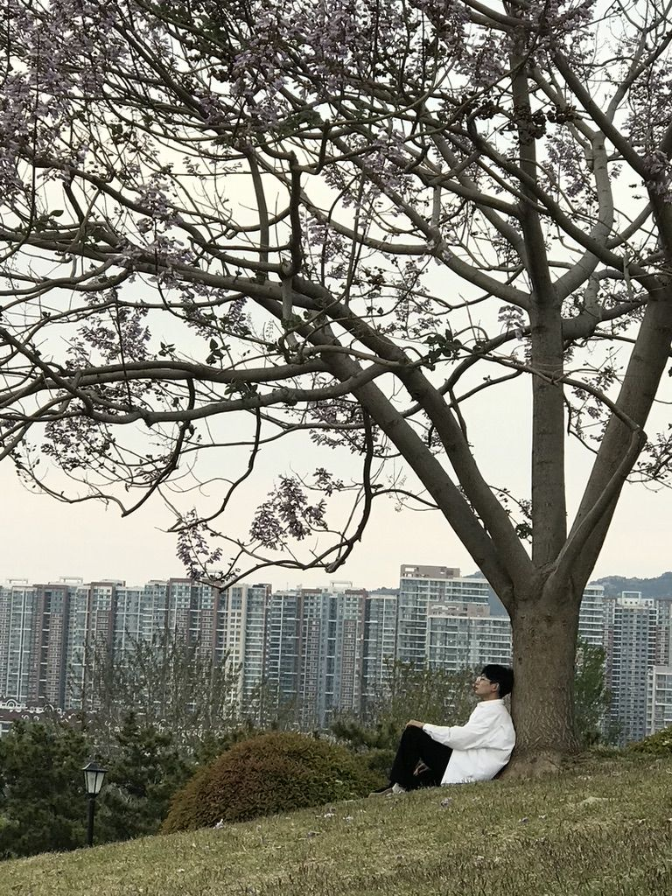
CADENZA
Proof of a thousand nights.
千夜琴声，落成金纸
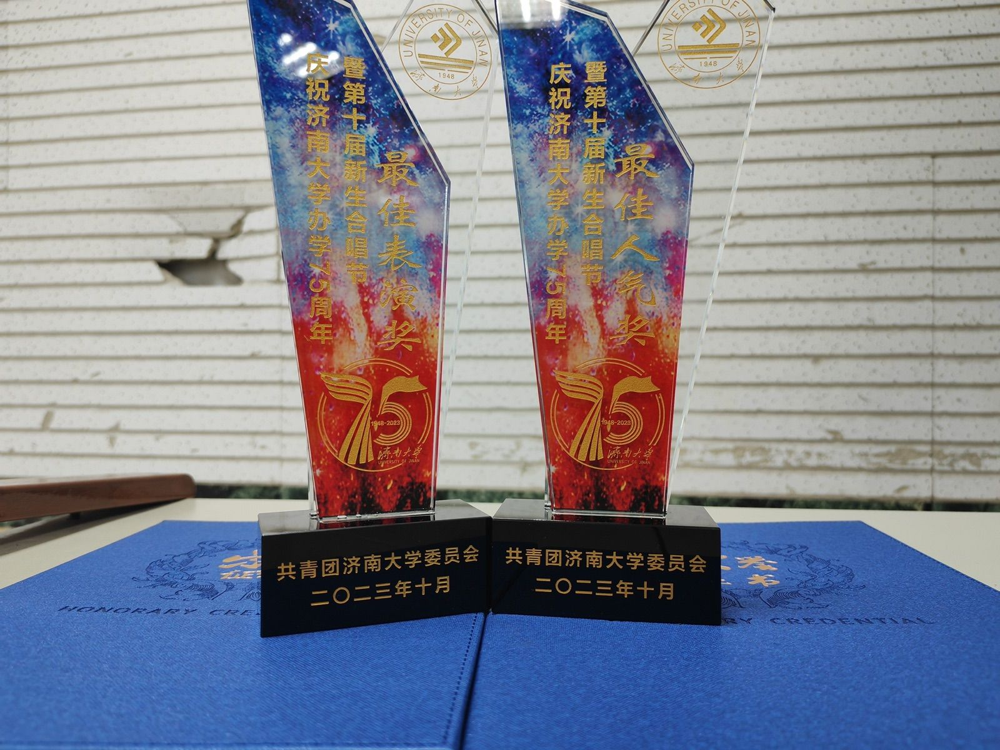
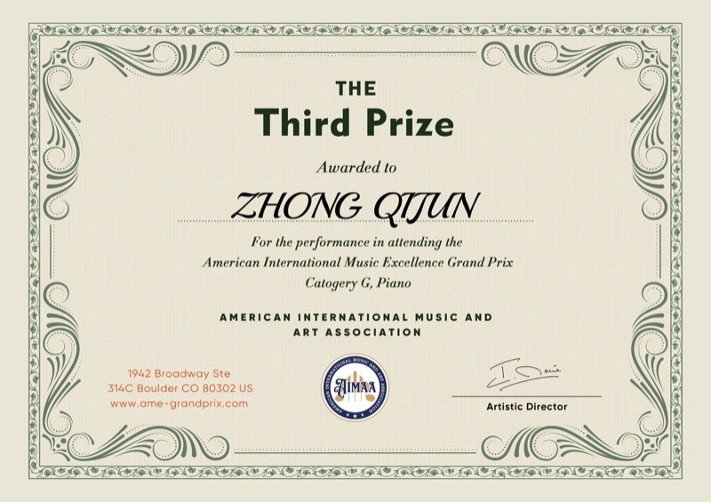
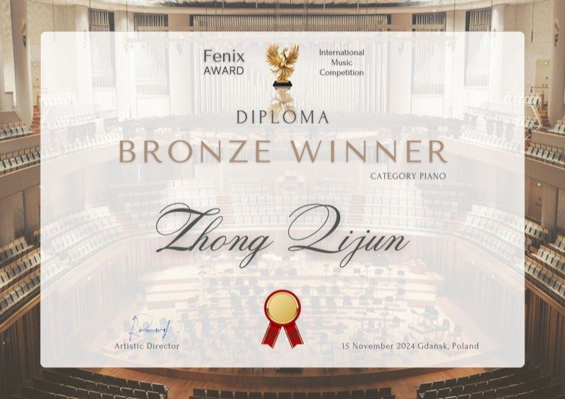
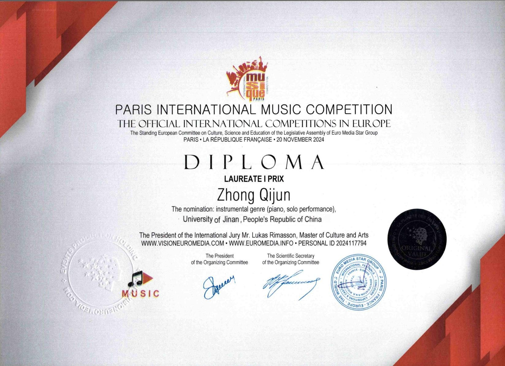
A glimpse of a larger whole.
这里，只是序曲。
更多荣誉档案见 乐章